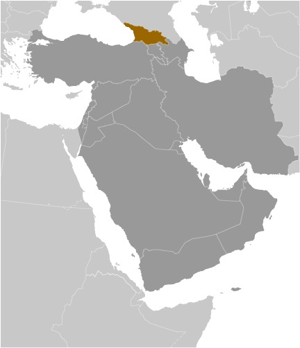
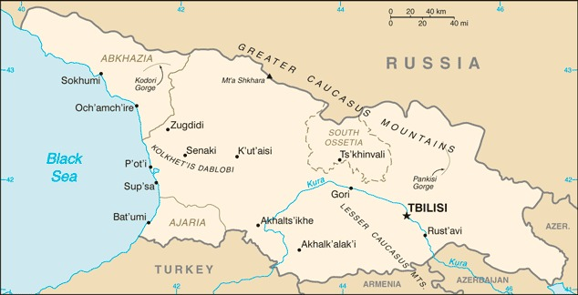
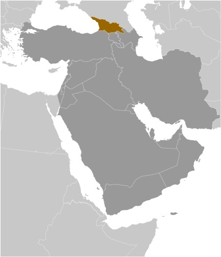
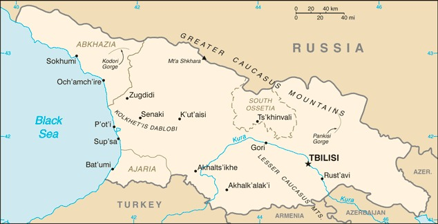

-
Introduction :: Georgia
-
Background:
The region of present day Georgia contained the ancient kingdoms of Colchis and Kartli-Iberia. The area came under Roman influence in the first centuries A.D., and Christianity became the state religion in the 330s. Domination by Persians, Arabs, and Turks was followed by a Georgian golden age (11th-13th centuries) that was cut short by the Mongol invasion of 1236. Subsequently, the Ottoman and Persian empires competed for influence in the region. Georgia was absorbed into the Russian Empire in the 19th century. Independent for three years (1918-1921) following the Russian revolution, it was forcibly incorporated into the USSR in 1921 and regained its independence when the Soviet Union dissolved in 1991.
Mounting public discontent over rampant corruption and ineffective government services, followed by an attempt by the incumbent Georgian Government to manipulate parliamentary elections in November 2003, touched off widespread protests that led to the resignation of Eduard SHEVARDNADZE, president since 1995. In the aftermath of that popular movement, which became known as the "Rose Revolution," new elections in early 2004 swept Mikheil SAAKASHVILI into power along with his United National Movement (UNM) party. Progress on market reforms and democratization has been made in the years since independence, but this progress has been complicated by Russian assistance and support to the separatist regions of Abkhazia and South Ossetia. Periodic flare-ups in tension and violence culminated in a five-day conflict in August 2008 between Russia and Georgia, including the invasion of large portions of undisputed Georgian territory. Russian troops pledged to pull back from most occupied Georgian territory, but in late August 2008 Russia unilaterally recognized the independence of Abkhazia and South Ossetia, and Russian military forces remain in those regions.
Billionaire Bidzina IVANISHVILI's unexpected entry into politics in October 2011 brought the divided opposition together under his Georgian Dream coalition, which won a majority of seats in the October 2012 parliamentary elections and removed UNM from power. Conceding defeat, SAAKASHVILI named IVANISHVILI as prime minister and allowed Georgian Dream to create a new government. Giorgi MARGVELASHVILI was inaugurated as president on 17 November 2013, ending a tense year of power-sharing between SAAKASHVILI and IVANISHVILI. At the time, these changes in leadership represented unique examples of a former Soviet state that emerged to conduct democratic and peaceful government transitions of power. IVANISHVILI voluntarily resigned from office after the presidential succession, and Georgia's legislature on 20 November 2013 confirmed Irakli GARIBASHVILI as his replacement. GARIBASHVILI was replaced by Giorgi KVIRIKASHVILI in December 2015. KVIRIKASHVILI remained prime minister following Georgian Dream’s success in the October 2016 parliamentary elections, where the party won a constitutional majority. IVANISHVILI reemerged as Georgian Dream party chairman in April 2018. KVIRIKASHVILI resigned in June 2018 and was replaced by Mamuka BAKHTADZE. In September 2019, BAKHTADZE resigned and Giorgi GAKHARIA was named the country's new head of government, Georgia's fifth prime minister in seven years. Popular and government support for integration with the West is high in Georgia. Joining the EU and NATO are among the country's top foreign policy goals.
-
Geography :: Georgia
-
Location:Southwestern Asia, bordering the Black Sea, between Turkey and Russia, with a sliver of land north of the Caucasus extending into Europe; note - Georgia views itself as part of Europe; geopolitically, it can be classified as falling within Europe, the Middle East, or bothGeographic coordinates:42 00 N, 43 30 EMap references:AsiaArea:total: 69,700 sq kmland: 69,700 sq kmwater: 0 sq km
note: approximately 12,560 sq km, or about 18% of Georgia's area, is Russian occupied; the seized area includes all of Abkhazia and the breakaway region of South Ossetia, which consists of the northern part of Shida Kartli, eastern slivers of the Imereti region and Racha-Lechkhumi and Kvemo Svaneti, and part of western Mtskheta-Mtianeti
country comparison to the world: 121Area - comparative:slightly smaller than South Carolina; slightly larger than West VirginiaArea comparison map: The World Factbook Field Image ModalMiddle East :: Georgia Print
The World Factbook Field Image ModalMiddle East :: Georgia Print Image Description
Image Descriptionslightly smaller than South Carolina; slightly larger than West Virginia
Land boundaries:total: 1,814 kmborder countries (4): Armenia 219 km, Azerbaijan 428 km, Russia 894 km, Turkey 273 kmCoastline:310 kmMaritime claims:territorial sea: 12 nmexclusive economic zone: 200 nmClimate:warm and pleasant; Mediterranean-like on Black Sea coastTerrain:largely mountainous with Great Caucasus Mountains in the north and Lesser Caucasus Mountains in the south; Kolkhet'is Dablobi (Kolkhida Lowland) opens to the Black Sea in the west; Mtkvari River Basin in the east; fertile soils in river valley flood plains and foothills of Kolkhida LowlandElevation:mean elevation: 1,432 mlowest point: Black Sea 0 mhighest point: Mt'a Shkhara 5,193 mNatural resources:timber, hydropower, manganese deposits, iron ore, copper, minor coal and oil deposits; coastal climate and soils allow for important tea and citrus growthLand use:agricultural land: 35.5% (2011 est.)arable land: 5.8% (2011 est.) / permanent crops: 1.8% (2011 est.) / permanent pasture: 27.9% (2011 est.)forest: 39.4% (2011 est.)other: 25.1% (2011 est.)Irrigated land:4,330 sq km (2012)Population distribution:settlement concentrated in the central valley, particularly in the capital city of Tbilisi in the east; smaller urban agglomerations dot the Black Sea coast, with Bat'umi being the largestNatural hazards:earthquakesEnvironment - current issues:air pollution, particularly in Rust'avi; heavy water pollution of Mtkvari River and the Black Sea; inadequate supplies of potable water; soil pollution from toxic chemicals; land and forest degradation; biodiversity loss; waste managementEnvironment - international agreements:party to: Air Pollution, Biodiversity, Climate Change, Climate Change-Kyoto Protocol, Desertification, Endangered Species, Hazardous Wastes, Law of the Sea, Ozone Layer Protection, Ship Pollution, Wetlandssigned, but not ratified: none of the selected agreementsGeography - note:note 1: strategically located east of the Black Sea; Georgia controls much of the Caucasus Mountains and the routes through them
note 2: the world's four deepest caves are all in Georgia, including two that are the only known caves on earth deeper than 2,000 m: Krubera Cave at -2,197 m (-7,208 ft; reached in 2012) and Veryovkina Cave at -2,212 (-7,257 ft; reached in 2018) -
People and Society :: Georgia
-
Population:3.997 million (2019 est. est.)country comparison to the world: 129Nationality:noun: Georgian(s)adjective: GeorgianEthnic groups:Georgian 86.8%, Azeri 6.3%, Armenian 4.5%, other 2.3% (includes Russian, Ossetian, Yazidi, Ukrainian, Kist, Greek) (2014 est.)Languages:Georgian (official) 87.6%, Azeri 6.2%, Armenian 3.9%, Russian 1.2%, other 1% (2014 est.)
note: Abkhaz is the official language in Abkhazia
Religions:Orthodox (official) 83.4%, Muslim 10.7%, Armenian Apostolic 2.9%, other 1.2% (includes Catholic, Jehovah's Witness, Yazidi, Protestant, Jewish), none 0.5%, unspecified/no answer 1.2% (2014 est.)Age structure:0-14 years: 18.42% (male 472,731/female 435,174)15-24 years: 10.9% (male 286,518/female 250,882)25-54 years: 40.59% (male 984,942/female 1,016,353)55-64 years: 13.24% (male 288,650/female 364,117)65 years and over: 16.85% (male 326,219/female 504,444) (2020 est.)population pyramid: The World Factbook Field Image ModalMiddle East :: Georgia Print
The World Factbook Field Image ModalMiddle East :: Georgia Print Image DescriptionThis is the population pyramid for Georgia. A population pyramid illustrates the age and sex structure of a country's population and may provide insights about political and social stability, as well as economic development. The population is distributed along the horizontal axis, with males shown on the left and females on the right. The male and female populations are broken down into 5-year age groups represented as horizontal bars along the vertical axis, with the youngest age groups at the bottom and the oldest at the top. The shape of the population pyramid gradually evolves over time based on fertility, mortality, and international migration trends.
Image DescriptionThis is the population pyramid for Georgia. A population pyramid illustrates the age and sex structure of a country's population and may provide insights about political and social stability, as well as economic development. The population is distributed along the horizontal axis, with males shown on the left and females on the right. The male and female populations are broken down into 5-year age groups represented as horizontal bars along the vertical axis, with the youngest age groups at the bottom and the oldest at the top. The shape of the population pyramid gradually evolves over time based on fertility, mortality, and international migration trends.
For additional information, please see the entry for Population pyramid on the Definitions and Notes page under the References tab.Dependency ratios:total dependency ratio: 55youth dependency ratio: 31.3elderly dependency ratio: 23.6potential support ratio: 4.2 (2020 est.)Median age:total: 38.6 yearsmale: 35.9 yearsfemale: 41.4 years (2020 est.)country comparison to the world: 60Population growth rate:0.05% (2020 est.)country comparison to the world: 188Birth rate:11.6 births/1,000 population (2020 est.)country comparison to the world: 168Death rate:11 deaths/1,000 population (2020 est.)country comparison to the world: 21Net migration rate:0.1 migrant(s)/1,000 population (2020 est.)country comparison to the world: 73Population distribution:settlement concentrated in the central valley, particularly in the capital city of Tbilisi in the east; smaller urban agglomerations dot the Black Sea coast, with Bat'umi being the largestUrbanization:urban population: 59.5% of total population (2020)rate of urbanization: 0.42% annual rate of change (2015-20 est.)note: data include Abkhazia and South Ossetia
total population growth rate v. urban population growth rate, 2000-2030: PDFMajor urban areas - population:1.078 million TBILISI (capital) (2020)Sex ratio:at birth: 1.05 male(s)/female0-14 years: 1.09 male(s)/female15-24 years: 1.14 male(s)/female25-54 years: 0.97 male(s)/female55-64 years: 0.79 male(s)/female65 years and over: 0.65 male(s)/femaletotal population: 0.92 male(s)/female (2020 est.)Mother's mean age at first birth:25.4 years (2017 est.)note: data do not cover Abkhazia and South Ossetia
Maternal mortality rate:25 deaths/100,000 live births (2017 est.)country comparison to the world: 121Infant mortality rate:total: 13.8 deaths/1,000 live birthsmale: 15.8 deaths/1,000 live birthsfemale: 11.7 deaths/1,000 live births (2020 est.)country comparison to the world: 100Life expectancy at birth:total population: 77 yearsmale: 72.9 yearsfemale: 81.3 years (2020 est.)country comparison to the world: 85Total fertility rate:1.75 children born/woman (2020 est.)country comparison to the world: 159Contraceptive prevalence rate:40.6% (2018)Drinking water source:improved: urban: 100% of populationrural: 96.2% of populationtotal: 98.4% of populationunimproved: urban: 0% of populationrural: 3.8% of populationtotal: 1.6% of population (2017 est.)Current Health Expenditure:7.6% (2017)Physicians density:6.13 physicians/1,000 population (2017)Hospital bed density:2.9 beds/1,000 population (2014)Sanitation facility access:improved: urban: 97% of populationrural: 82.7% of populationtotal: 91.1% of populationunimproved: urban: 3% of populationrural: 17.3% of populationtotal: 8.9% of population (2017 est.)HIV/AIDS - adult prevalence rate:0.3% (2019 est.)country comparison to the world: 87HIV/AIDS - people living with HIV/AIDS:9,100 (2019 est.)country comparison to the world: 107HIV/AIDS - deaths:<100 (2019 est.)Obesity - adult prevalence rate:21.7% (2016)country comparison to the world: 86Children under the age of 5 years underweight:1.1% (2009)country comparison to the world: 126Education expenditures:3.5% of GDP (2018)country comparison to the world: 116Literacy:definition: age 15 and over can read and writetotal population: 99.4%male: 99.4%female: 99.3% (2017)School life expectancy (primary to tertiary education):total: 15 yearsmale: 16 yearsfemale: 16 years (2019)Unemployment, youth ages 15-24:total: 29.9%male: 26.7%female: 35.3% (2018 est.)country comparison to the world: 29 -
Government :: Georgia
-
Country name:conventional long form: noneconventional short form: Georgialocal long form: nonelocal short form: Sak'art'veloformer: Georgian Soviet Socialist Republicetymology: the Western name may derive from the Persian designation "gurgan" meaning "Land of the Wolves"; the native name "Sak'art'velo" means "Land of the Kartvelians" and refers to the core central Georgian region of KartliGovernment type:semi-presidential republicCapital:name: Tbilisigeographic coordinates: 41 41 N, 44 50 Etime difference: UTC+4 (9 hours ahead of Washington, DC, during Standard Time)etymology: the name in Georgian means "warm place," referring to the numerous sulfuric hot springs in the areaAdministrative divisions:
9 regions (mkharebi, singular - mkhare), 1 city (kalaki), and 2 autonomous republics (avtomnoy respubliki, singular - avtom respublika)
regions: Guria, Imereti, Kakheti, Kvemo Kartli, Mtskheta Mtianeti, Racha-Lechkhumi and Kvemo Svaneti, Samegrelo and Zemo Svaneti, Samtskhe-Javakheti, Shida Kartli; note - the breakaway region of South Ossetia consists of the northern part of Shida Kartli, eastern slivers of the Imereti region and Racha-Lechkhumi and Kvemo Svaneti, and part of western Mtskheta-Mtianeti
city: Tbilisi
autonomous republics: Abkhazia or Ap'khazet'is Avtonomiuri Respublika (Sokhumi), Ajaria or Acharis Avtonomiuri Respublika (Bat'umi)
note 1: the administrative centers of the two autonomous republics are shown in parentheses
note 2: the United States recognizes the breakaway regions of Abkhazia and South Ossetia to be part of Georgia
Independence:9 April 1991 (from the Soviet Union); notable earlier date: A.D. 1008 (Georgia unified under King BAGRAT III)National holiday:Independence Day, 26 May (1918); note - 26 May 1918 was the date of independence from Soviet Russia, 9 April 1991 was the date of independence from the Soviet UnionConstitution:history: previous 1921, 1978 (based on 1977 Soviet Union constitution); latest approved 24 August 1995, effective 17 October 1995amendments: proposed as a draft law supported by more than one half of the Parliament membership or by petition of at least 200,000 voters; passage requires support by at least three fourths of the Parliament membership in two successive sessions three months apart and the signature and promulgation by the president of Georgia; amended several times, last in 2020 (legislative electoral system revised)Legal system:civil law systemInternational law organization participation:accepts compulsory ICJ jurisdiction; accepts ICCt jurisdictionCitizenship:citizenship by birth: nocitizenship by descent only: at least one parent must be a citizen of Georgiadual citizenship recognized: noresidency requirement for naturalization: 10 yearsSuffrage:18 years of age; universalExecutive branch:chief of state: President Salome ZOURABICHVILI (since 16 December 2018)head of government: Prime Minister Giorgi GAKHARIA (since 8 September 2019)cabinet: Cabinet of Ministerselections/appointments: president directly elected by absolute majority popular vote in 2 rounds if needed for a 5-year term (eligible for a second term); election last held on 28 November 2018 (next to be held in 2024); prime minister nominated by Parliament, appointed by the president
note - 2017 constitutional amendments made the 2018 election the last where the president was directly elected; future presidents will be elected by a 300-member College of Electors; in light of these changes, ZOURABICHVILI was allowed a six-year termelection results: Salome ZOURABICHVILI elected president in runoff; percent of vote - Salome ZOURABICHVILI (independent, backed by Georgian Dream) 59.5%, Grigol VASHADZE (UNM) 40.5%; Giorgi GAKHARIA approved as prime minister by Parliamentary vote 98-0Legislative branch:description: unicameral Parliament or Sakartvelos Parlamenti (150 seats; 120 members directly elected in a single nationwide constituency by closed, party-list proportional representation vote and 30 directly elected in single-seat constituencies by at least 50% majority vote, with a runoff if needed; no party earning less than 40% of total votes may claim a majority; members serve 4-year terms)elections: last held on 31 October and 21 November 2020 (next to be held in October 2024)election results: percent of vote by party - Georgian Dream 48.2%, UNM 27.2%, European Georgia 3.8%, Lelo 3.2%, Strategy 3.2%, Alliance of Patriots 3.1%, Girchi 2.9%, Citizens 1.3%, Labor 1%; seats by party - Georgian Dream 90, UNM 36, European Georgia 5, Lelo 4, Strategy 4, Alliance of Patriots 4, Girchi 4, Citizens 2, Labor 1Judicial branch:highest courts: Supreme Court (consists of 28 judges organized into several specialized judicial chambers; number of judges determined by the president of Georgia); Constitutional Court (consists of 9 judges); note - the Abkhazian and Ajarian Autonomous republics each have a supreme court and a hierarchy of lower courtsjudge selection and term of office: Supreme Court judges nominated by the High Council of Justice (a 14-member body consisting of the Supreme Court chairperson, common court judges, and appointees of the president of Georgia) and appointed by Parliament; judges appointed for life; Constitutional Court judges appointed 3 each by the president, by Parliament, and by the Supreme Court judges; judges appointed for 10-year termssubordinate courts: Courts of Appeal; regional (town) and district courtsPolitical parties and leaders:Alliance of Patriots [Irma INASHVILI]
Democratic Movement-United Georgia [Nino BURJANADZE]
Citizens Party
Development Movement [Davit USPASHVILI]
European Georgia-Movement for Liberty [Davit BAKRADZE]
For Justice Party [Eka BESELIA]
Free Democrats or FD [Shalva SHAVGULIDZE]
Georgian Dream-Democratic Georgia [Bidzina IVANISHVILI]
Girchi (Pinecone) [Zurab JAPARIDZE]
Industry Will Save Georgia (Industrialists) or IWSG [Giorgi TOPADZE]
Labor Party [Shalva NATELASHVILI]
Lelo for Georgia [Mamuka KHAZARADZE]
New Georgia [Giorgi VASHADZE]
Republican Party [Khatuna SAMNIDZE]
Strategy Aghmashenebeli [Giorgi VASHADZE]
United National Movement or UNM [Grigol VASHADZE]International organization participation:ADB, BSEC, CD, CE, CPLP (associate), EAPC, EBRD, FAO, G-11, GCTU, GUAM, IAEA, IBRD, ICAO, ICC (national committees), ICCt, ICRM, IDA, IFAD, IFC, IFRCS, ILO, IMF, IMO, Interpol, IOC, IOM, IPU, ISO (correspondent), ITSO, ITU, ITUC (NGOs), MIGA, OAS (observer), OIF (observer), OPCW, OSCE, PFP, SELEC (observer), UN, UNCTAD, UNESCO, UNIDO, UNWTO, UPU, WCO, WHO, WIPO, WMO, WTODiplomatic representation in the US:chief of mission: Ambassador David BAKRADZE (since 18 January 2017)chancery: 1824 R Street NW, Washington, DC 20009telephone: [1] (202) 387-2390FAX: [1] (202) 387-0864consulate(s) general: New YorkDiplomatic representation from the US:chief of mission: Ambassador Kelly C. DEGNAN (since 31 January 2020)telephone: [995] (32) 227-70-00embassy: 11 George Balanchine Street, Tbilisi, 0131mailing address: 7060 T'bilisi Place, Washington, DC 20521-7060FAX: [995] (32) 253-23-10Flag description:white rectangle with a central red cross extending to all four sides of the flag; each of the four quadrants displays a small red bolnur-katskhuri cross; sometimes referred to as the Five-Cross Flag; although adopted as the official Georgian flag in 2004, the five-cross design appears to date back to the 14th centuryNational symbol(s):Saint George, lion; national colors: red, whiteNational anthem:name: "Tavisupleba" (Liberty)lyrics/music: Davit MAGRADSE/Zakaria PALIASHVILI (adapted by Joseb KETSCHAKMADSE)note: adopted 2004; after the Rose Revolution, a new anthem with music based on the operas "Abesalom da Eteri" and "Daisi" was adopted
-
Economy :: Georgia
-
Economic overview:
Georgia's main economic activities include cultivation of agricultural products such as grapes, citrus fruits, and hazelnuts; mining of manganese, copper, and gold; and producing alcoholic and nonalcoholic beverages, metals, machinery, and chemicals in small-scale industries. The country imports nearly all of its needed supplies of natural gas and oil products. It has sizeable hydropower capacity that now provides most of its electricity needs.
Georgia has overcome the chronic energy shortages and gas supply interruptions of the past by renovating hydropower plants and by increasingly relying on natural gas imports from Azerbaijan instead of from Russia. Construction of the Baku-Tbilisi-Ceyhan oil pipeline, the South Caucasus gas pipeline, and the Baku-Tbilisi-Kars railroad are part of a strategy to capitalize on Georgia's strategic location between Europe and Asia and develop its role as a transit hub for gas, oil, and other goods.
Georgia's economy sustained GDP growth of more than 10% in 2006-07, based on strong inflows of foreign investment, remittances, and robust government spending. However, GDP growth slowed following the August 2008 conflict with Russia, and sank to negative 4% in 2009 as foreign direct investment and workers' remittances declined in the wake of the global financial crisis. The economy rebounded in the period 2010-17, but FDI inflows, the engine of Georgian economic growth prior to the 2008 conflict, have not recovered fully. Unemployment remains persistently high.
The country is pinning its hopes for faster growth on a continued effort to build up infrastructure, enhance support for entrepreneurship, simplify regulations, and improve professional education, in order to attract foreign investment and boost employment, with a focus on transportation projects, tourism, hydropower, and agriculture. Georgia had historically suffered from a chronic failure to collect tax revenues; however, since 2004 the government has simplified the tax code, increased tax enforcement, and cracked down on petty corruption, leading to higher revenues. The government has received high marks from the World Bank for improvements in business transparency. Since 2012, the Georgian Dream-led government has continued the previous administration's low-regulation, low-tax, free market policies, while modestly increasing social spending and amending the labor code to comply with International Labor Standards. In mid-2014, Georgia concluded an association agreement with the EU, paving the way to free trade and visa-free travel. In 2017, Georgia signed Free Trade Agreement (FTA) with China as part of Tbilisi’s efforts to diversify its economic ties. Georgia is seeking to develop its Black Sea ports to further facilitate East-West trade.
GDP real growth rate:5% (2017 est.)2.8% (2016 est.)2.9% (2015 est.)country comparison to the world: 47Inflation rate (consumer prices):4.8% (2019 est.)2.6% (2018 est.)6% (2017 est.)country comparison to the world: 179Credit ratings:Fitch rating: BB (2019)Moody's rating: Ba2 (2017)Standard & Poors rating: BB (2019)GDP (purchasing power parity) - real:$39.85 billion (2017 est.)$37.96 billion (2016 est.)$36.91 billion (2015 est.)note: data are in 2017 dollars
GDP (official exchange rate):$17.694 billion (2019 est.)GDP - per capita (PPP):$10,700 (2017 est.)$10,300 (2016 est.)$9,900 (2015 est.)note: data are in 2017 dollars
country comparison to the world: 114Gross national saving:23% of GDP (2017 est.)19.9% of GDP (2016 est.)19.5% of GDP (2015 est.)country comparison to the world: 75GDP - composition, by sector of origin:agriculture: 8.2% (2017 est.)industry: 23.7% (2017 est.)services: 67.9% (2017 est.)GDP - composition, by end use:household consumption: 62.8% (2017 est.)government consumption: 17.1% (2017 est.)investment in fixed capital: 29.5% (2017 est.)investment in inventories: 2.4% (2017 est.)exports of goods and services: 50.4% (2017 est.)imports of goods and services: -62.2% (2017 est.)Ease of Doing Business Index scores:83.7 (2020)Agriculture - products:citrus, grapes, tea, hazelnuts, vegetables; livestockIndustries:steel, machine tools, electrical appliances, mining (manganese, copper, gold), chemicals, wood products, wineIndustrial production growth rate:6.7% (2017 est.)country comparison to the world: 34Labor force:686,000 (2019 est.)country comparison to the world: 150Labor force - by occupation:agriculture: 55.6%industry: 8.9%services: 35.5% (2006 est.)Unemployment rate:NA% (2017 est.)11.8% (2016 est.)country comparison to the world: 161Population below poverty line:9.2% (2010 est.)Budget:revenues: 4.352 billion (2017 est.)expenditures: 4.925 billion (2017 est.)Taxes and other revenues:28.7% (of GDP) (2017 est.)country comparison to the world: 91Budget surplus (+) or deficit (-):-3.8% (of GDP) (2017 est.)country comparison to the world: 153Public debt:44.9% of GDP (2017 est.)44.4% of GDP (2016 est.)note: data cover general government debt and include debt instruments issued (or owned) by government entities other than the treasury; the data include treasury debt held by foreign entities; the data include debt issued by subnational entities; Georgia does not maintain intragovernmental debt or social funds
country comparison to the world: 116Fiscal year:calendar yearCurrent account balance:-$1.348 billion (2017 est.)-$1.84 billion (2016 est.)country comparison to the world: 156Exports:$3.566 billion (2017 est.)$2.831 billion (2016 est.)country comparison to the world: 128Exports - partners:Russia 14.5%, Azerbaijan 10%, Turkey 7.9%, Armenia 7.7%, China 7.6%, Bulgaria 6.6%, Ukraine 4.6%, US 4.5% (2017)Exports - commodities:vehicles, ferro-alloys, fertilizers, nuts, scrap metal, gold, copper oresImports:$7.415 billion (2017 est.)$6.747 billion (2016 est.)country comparison to the world: 120Imports - commodities:fuels, vehicles, machinery and parts, grain and other foods, pharmaceuticalsImports - partners:Turkey 17.2%, Russia 9.9%, China 9.2%, Azerbaijan 7.6%, Ukraine 5.6%, Germany 5.4% (2017)Reserves of foreign exchange and gold:$3.039 billion (31 December 2017 est.)$2.756 billion (31 December 2016 est.)country comparison to the world: 108Debt - external:$16.99 billion (31 December 2017 est.)$14.08 billion (31 December 2016 est.)country comparison to the world: 100Exchange rates:laris (GEL) per US dollar -2.535 (2017 est.)2.3668 (2016 est.)2.3668 (2015 est.)2.2694 (2014 est.)1.7657 (2013 est.) -
Energy :: Georgia
-
Electricity access:electrification - total population: 100% (2020)Electricity - production:13.24 billion kWh (2016 est.)country comparison to the world: 91Electricity - consumption:12.37 billion kWh (2016 est.)country comparison to the world: 87Electricity - exports:560 million kWh (2016 est.)country comparison to the world: 66Electricity - imports:1.329 billion kWh (2016 est.)country comparison to the world: 63Electricity - installed generating capacity:4.641 million kW (2016 est.)country comparison to the world: 84Electricity - from fossil fuels:35% of total installed capacity (2016 est.)country comparison to the world: 178Electricity - from nuclear fuels:0% of total installed capacity (2017 est.)country comparison to the world: 95Electricity - from hydroelectric plants:65% of total installed capacity (2017 est.)country comparison to the world: 22Electricity - from other renewable sources:0% of total installed capacity (2017 est.)country comparison to the world: 187Crude oil - production:400 bbl/day (2018 est.)country comparison to the world: 93Crude oil - exports:3,006 bbl/day (2017 est.)country comparison to the world: 68Crude oil - imports:2,660 bbl/day (2015 est.)country comparison to the world: 78Crude oil - proved reserves:35 million bbl (1 January 2018 est.)country comparison to the world: 80Refined petroleum products - production:247 bbl/day (2017 est.)country comparison to the world: 106Refined petroleum products - consumption:27,000 bbl/day (2016 est.)country comparison to the world: 122Refined petroleum products - exports:2,052 bbl/day (2015 est.)country comparison to the world: 104Refined petroleum products - imports:28,490 bbl/day (2015 est.)country comparison to the world: 101Natural gas - production:7.363 million cu m (2017 est.)country comparison to the world: 95Natural gas - consumption:2.294 billion cu m (2017 est.)country comparison to the world: 83Natural gas - exports:0 cu m (2017 est.)country comparison to the world: 109Natural gas - imports:2.294 billion cu m (2017 est.)country comparison to the world: 50Natural gas - proved reserves:8.495 billion cu m (1 January 2018 est.)country comparison to the world: 80Carbon dioxide emissions from consumption of energy:9.912 million Mt (2017 est.)country comparison to the world: 109
-
Communications :: Georgia
-
Telephones - fixed lines:total subscriptions: 638,092subscriptions per 100 inhabitants: 12.95 (2019 est.)country comparison to the world: 88Telephones - mobile cellular:total subscriptions: 6,638,125subscriptions per 100 inhabitants: 134.72 (2019 est.)country comparison to the world: 106Telecommunication systems:general assessment: telecommunications fastest growing area of Georgia's economy; LTE services now cover the vast majority of the population; fixed-line telecommunications network has limited coverage outside Tbilisi; multiple mobile-cellular providers provide services to an increasing subscribership throughout the country; broadband subscribers steadily increasing; with the recent investment in infrastructure customers are moving from copper to fiber networks (2020)domestic: fixed-line 13 per 100, cellular telephone networks cover the entire country; mobile-cellular teledensity roughly 135 per 100 persons; intercity facilities include a fiber-optic line between T'bilisi and K'ut'aisi (2019)international: country code - 995; landing points for the Georgia-Russia, Diamond Link Global, and Caucasus Cable System fiber-optic submarine cable that provides connectivity to Russia, Romania and Bulgaria; international service is available by microwave, landline, and satellite through the Moscow switch; international electronic mail and telex service are available (2019)note: the COVID-19 outbreak is negatively impacting telecommunications production and supply chains globally; consumer spending on telecom devices and services has also slowed due to the pandemic's effect on economies worldwide; overall progress towards improvements in all facets of the telecom industry - mobile, fixed-line, broadband, submarine cable and satellite - has moderatedBroadcast media:
The Tbilisi-based Georgian Public Broadcaster (GPB) includes Channel 1, Channel 2 as well as the Batumi-based Adjara TV, and the State Budget funds all three; there are also a number of independent commercial television broadcasters, such as Imedi, Rustavi 2, Pirveli TV, Maestro, Kavkasia, Georgian Dream Studios (GDS), Obiektivi, Mtavari Arkhi, and a small Russian language operator TOK TV; Tabula and Post TV are web-based television outlets; all of these broadcasters and web-based television outlets, except GDS, carry the news; the Georgian Orthodox Church also operates a satellite-based television station called Unanimity; there are 26 regional television broadcasters across Georgia that are members of the Georgian Association of Regional Broadcasters and/or the Alliance of Georgian Broadcasters; the broadcaster organizations seek to strengthen the regional media's capacities and distribution of regional products: a nationwide digital switchover occurred in 2015; there are several dozen private radio stations; GPB operates 2 radio stations
(2019)Internet country code:.geInternet users:total: 3,151,218percent of population: 63.97% (July 2018 est.)country comparison to the world: 97Broadband - fixed subscriptions:total: 840,603subscriptions per 100 inhabitants: 17 (2018 est.)country comparison to the world: 72 -
Transportation :: Georgia
-
National air transport system:number of registered air carriers: 4 (2020)inventory of registered aircraft operated by air carriers: 12annual passenger traffic on registered air carriers: 516,034 (2018)annual freight traffic on registered air carriers: 750,000 mt-km (2018)Civil aircraft registration country code prefix:4L (2016)Airports:22 (2013)country comparison to the world: 134Airports - with paved runways:total: 18 (2017)over 3,047 m: 1 (2017)2,438 to 3,047 m: 7 (2017)1,524 to 2,437 m: 3 (2017)914 to 1,523 m: 5 (2017)under 914 m: 2 (2017)Airports - with unpaved runways:total: 4 (2013)1,524 to 2,437 m: 1 (2013)914 to 1,523 m: 2 (2013)under 914 m: 1 (2013)Heliports:2 (2013)Pipelines:1596 km gas, 1175 km oil (2013)Railways:total: 1,363 km (2014)narrow gauge: 37 km 0.912-m gauge (37 km electrified) (2014)broad gauge: 1,326 km 1.520-m gauge (1,251 km electrified) (2014)country comparison to the world: 84Roadways:total: 20,295 km (2018)country comparison to the world: 113Merchant marine:total: 82by type: bulk carrier 3general cargo 22, oil tanker 2, other 55 (2019)country comparison to the world: 99Ports and terminals:major seaport(s): Black Sea - Bat'umi, P'ot'i
-
Military and Security :: Georgia
-
Military and security forces:Georgian Defense Forces: Land Forces (includes Aviation and Air Defense Forces); Special Operations Forces; National Guard; Ministry of the Interior: Border Police, Coast Guard (includes Georgian naval forces, which were merged with the Coast Guard in 2009) (2020)Military expenditures:2% of GDP (2019)2% of GDP (2018)2.1% of GDP (2017)2.2% of GDP (2016)2.1% of GDP (2015)country comparison to the world: 50Military and security service personnel strengths:estimates for the size of the Georgian Defense Forces vary; approximately 25,000 active troops, including the National Guard (2019 est.)Military equipment inventories and acquisitions:the Georgian Defense Forces are equipped mostly with older Russian and Soviet-era weapons; since 2010, it has received limited quantities of equipment from Bulgaria, France, and the US (2019 )Military deployments:860 Afghanistan (NATO) (2020)Military service age and obligation:conscription reinstated in 2017; 18 to 27 years of age for compulsory and voluntary active duty military service; conscript service obligation is 12 months (2019)Military - note:Georgia does not have any military stationed in the separatist territories of Abkhazia and South Ossetia, but large numbers of Russian servicemen have been stationed in these regions since the 2008 Russia-Georgia War (2019)
-
Transnational Issues :: Georgia
-
Disputes - international:
Russia's military support and subsequent recognition of Abkhazia and South Ossetia independence in 2008 continue to sour relations with Georgia
Refugees and internally displaced persons:IDPs: 301,000 (displaced in the 1990s as a result of armed conflict in the breakaway republics of Abkhazia and South Ossetia; displaced in 2008 by fighting between Georgia and Russia over South Ossetia) (2019)stateless persons: 559 (2019)Illicit drugs:limited cultivation of cannabis and opium poppy, mostly for domestic consumption; used as transshipment point for opiates via Central Asia to Western Europe and Russia
Middle East ::
Georgia